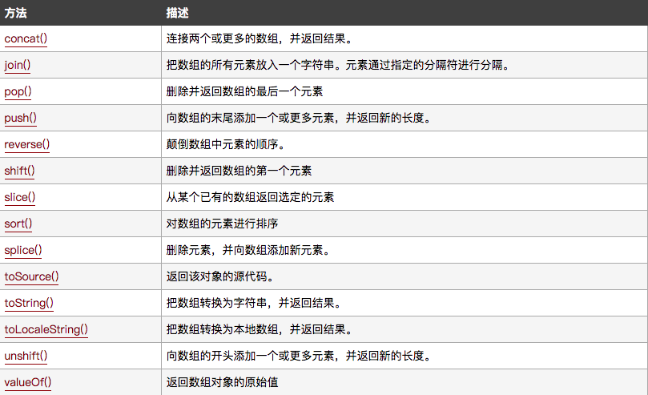

第一节：精讲
1.数组的概念及定义
可以存放一组数据；
当需要操作多个数据时，
2.数组的创建方式（构造函数和JSON）
字面量方式和构造函数方式：
var arr1 = [1,2,3]; //字面量方式（JSON方式）
var arr2 = new Array(1,2,3) //构造函数方式
注意：任何两个对象之间不相等。
var arr1 = [5] //表示有一个数组元素5
var arr2 = new Array(5) //表示有5个数组元素，值全部为undefined
arr1 == arr2 //false
数组的赋值：
1.静态赋值：直接使用指定的值给指定位置的数组
arr[0] = 1
arr[1] = "hello"
2.动态赋值：在程序运行过程中，创建具体的值给元素赋值
arr[0] = Math.random();
arr[1] = Math.random();
3.数组的操作（push／pop／unshift／shift）
数组中的项，可以放任何数据，如
var arr = [1,"1",function(){console.log(1)},console.log(1),Math.danmom(),1+1,[1,2,3],[0]]
数组的增、删、改、查
var arr = [1,2,3];
arr.push("hello") //在数组的末尾添加元素
arr.unshift("first") //在数组的开始添加元素
arr.pop() //删除最后一位元素
arr.shift() //删除第一个元素
arr.splice(n,m,a) //从第n个项目开始删除，一共删除m个;a可选，表示在删除的位置添加新元素a
arr.slice(n,m) //返回一个新数组，从下标n的位置取到下标m位置的前一个（不包含m），可以实现截取的功能
arr.sort(fn) //对数组进行排序,fn为一个函数，可选；
//当数组内的元素为字符型数字，默认排序已经无法满足，需要手动处理;
//如function fn(n,m){return n-m}
注意：每个方法的返回值
注意：查文档

自定义功能：自定义完成
4.数组的遍历(获取数组中的每个元素)
数组元素的获取：
索引，数组元素的下标，表示数组元素在数组中的顺序，从0开始，到arr.length-1
利用for循环，配合索引
5.整数数组／字符串数组／对象数组／二维数组
整数数组：arr = [1,2,3,4,5,6,7]
数组的元素为整数
字符串数组：arr = ["h","e","l","l","o”]
数组的元素为字符串
json对象数组：arr = [{name:"Lisa"},{name:"Jack"},{name:"Loss"}]
数组的元素为对象
如何获取对象数组内的元素：arr[1].name; //Jack
二维数组：arr = [[1,"a",3],["hello",6,8],["color","width"]]
数组的元素为数组
如何获取而为数组内的元素：arr[2][1]; //width
范围随机数
第二节：应用
1.定义一个30项的数组，数组的每一项要求是1－10的随机数，每间隔5个数字，求出前五个数的平均值
//1.随机生成一个30项的数组
var arr = [];
for(var i=0;i<30;i++){
arr.push(Math.round(Math.random()*9+1));
}
console.log(arr);
//2.封装一个求平均数的函数
function ave(arr){
var sum = 0;
for(var i=0;i<arr.length;i++){
sum += arr[i];
}
return sum/arr.length;
}
console.log(ave(arr));
//3.封装一个将数组分割成5个一组的函数
function getFive(arr){
var box = [];
for(var i=0;i<arr.length;i+=5){
box.push(arr.slice(i,i+5));
}
return box;
}
console.log(getFive(arr));
//4.将分割出来的5个数字为一组的数组，依次用求平均数的函数处理
for(var i=0;i<getFive(arr).length;i++){
console.log(ave(getFive(arr)[i]));
}
2.通过循环制造一个5 x 5的二维数组，这个数组中的数字由a，b之间随机而来，试编程
function randomArr(a,b){
var arr = []; //大数组
for(var i=0;i<5;i++){
var sarr = []; //小数组
for(var j=0;j<5;j++){
//向小数组内添加范围随机数
sarr.push(Math.round(Math.random()*(b-a)+a));
}
//将小数组添加到大数组内
arr.push(sarr);
}
return arr;
}
console.log(randomArr(10,5));
第三节：精讲
1.for-in循环
在使用for遍历数组的过程中，需要至少确定数组的长度，以判断遍历的次数
但如果遇到数组的元素个数不确定的情况，就不适合使用for循环遍历了
新的遍历方式：for-in循环
var arr = [1,1,2,3,5,8,13,21,34,…];
for(var n in arr){
console.log(arr[n]);
}
注意：for-in循环一般用来遍历非数组对象
for-in循环中的代码每执行一次，就会对数组的元素或者对象的属性进行一次操作。我们也称这种循环为“枚举”。
var obj = {
name:"lz",
age:36
}
for(var i in obj){
console.log(obj[i]);
}
2.数组的排序（冒泡／选择）
冒泡排序：
依次对数组中相邻数字进行比较(两两比较)，大的放后面

var arr = [5,99,2,9,1,5,67,7,10,23] //定义一个杂乱的数组
for(var i=0;i<arr.length-1;i++){ //大循环，用于遍历数组每个元素
for(var j=0;j<arr.length-i-1;j++){ //小循环，用于将数组中的某个元素与其它所有元素相比较
var sum; //声明一个局部变量，当作第三个空瓶子
if(arr[j]>arr[j+1]){ //判断当前元素和后一个元素的大小，如果当前元素比后一个元素大
sum = arr[j+1]; //将后一个元素（小元素）放在空瓶子里
arr[j+1] = arr[j]; //将当前元素（大元素）放在后一个元素的位置
arr[j] = sum; //将小元素从空瓶子中拿出来，放在当前元素的位置
}
}
}
console.log(arr); //完成循环之后，初始数组的顺序已经发生改变
选择排序：
将第一位依次与后面的元素相比较，得到最小值，与第一位交换。再用第二位依次与后面元素相比较，得到最小值，与第二位交换。
从原始数据中找到最小元素，并放在数组的最前面。然后再从下面的元素中找到最小元素，放在之前最小元素的后面，直到排序完成。

var arr = [5,99,2,9,1,5,67,7,10,23] //定义一个杂乱的数组
for(var i=0;i<arr.length-1;i++){//大循环，需要比对的次数
var min = arr[i];//假定一个最小值
var minIndex = i;//假定最小值的索引
for(var j=i+1;j<arr.length;j++){//小循环，每次需要比对的次数
if(min>arr[j]){//判断最小值是否为真的最小值
min = arr[j];//获取真正的最小值
minIndex = j;//获取真正最小值的索引
}
}
arr[minIndex] = arr[i];//将当前元素放在最小值的位置
arr[i] = min;//将最小值放在当前元素的位置
}
console.log(arr);//输入排序好的数组
3.栈和堆及索引思维
每个内存单元中分为两个部分，栈和堆
栈在内存的最底部，类似于一个标记，名字，分类；稳定，不可更改
堆数据，表示一组数据，可变更，数据量大，和栈一一对应
多个栈可以对应一个堆，反之不行
变量的声明，变量名存在了栈中
变量的赋值，数据存在了堆中
4.函数的值传递和引用传递
值传递：复制的是对象的值
引用传递：复制的是指针的指向（传递的是对象在堆内存中的内存地址）
如下：
var a = 10;
var b = a;
var b = 20;
console.log(a,b);
var a = new Object();
a.name = 10;
var b = a;
b.name = 20;
console.log(a.name,b.name)
再比如：
var a = {
name:"张三"
}
var b = {
name:"李四"
}
function change(obj){
obj.name = "老张";
obj = b;
return obj;
}
var newName = change(a);
console.log(newName.name);
console.log(a.name);
5.对象的本质和意义
常规对象：
var obj = {
name:"lz",
age:36,
skill:function(){
console.log(1)
}
}
对象的本质就是key和value，如下
obj的key为name / age
obj的value为"lz" / 36
key和value一一对应
对象都是由函数产生的
方法(Function)，数组(Array)，对象(Object)都是对象
上面的常规对象其实等价于：
var obj = new Object();
obj.name = "lz";
obj.age = 36
obj.skill = function(){
console.log(1);
}
外面的变量对应对象身上的属性
外面的函数对应对象身上的方法
由此可见对象的意义就是不仅可用来方便的存储数据，还可以用来编程
6.JSON表示对象的方法
数组和对象的组合，称为JSON
var json = [
{
name:"LY",
chinese:99,
math:88
},
{
name:"LY",
chinese:99,
math:88
}
]
国际通用语言：英语
中国通用语言：普通话
计算机语言中的通用数据：JSON，是计算机各种语言之间数据沟通的桥梁
在javascript中，JSON称为数组对象
别的语言想要对外沟通的时候称为JSON
7.随机点名程序
第四节：应用
1.数组的冒泡排序
2.数组的选择排序
3.编写函数map(arr) 把数组中的每一位数字都增加30%
4.编写函数has(arr , 60) 判断数组中是否存在60这个元素，返回布尔类型
第五节：综合应用
1.编写函数norepeat(arr) 将数组的重复元素去掉，并返回新的数组
2.有一个从小到大排好序的数组。现输入一个数，要求按原来的规律将它插入数组中。
3.使用JSON形式创建一个对象，该对象存储一个学生的信息，该对象包含学号、身份证、年龄、性别、所学专业等属性信息，同时该对象包含一个自我介绍的方法，用来输出该对象的所有信息
扩展案例：以下是某班级一次考试的成绩表。请计算每个学生总成绩，并按总成绩排名。统计各单科成绩第一名，输出其成绩与学号。